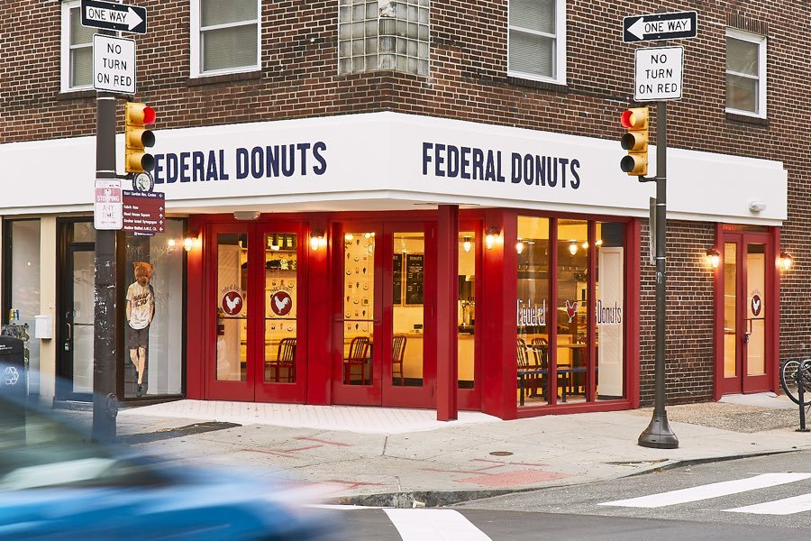
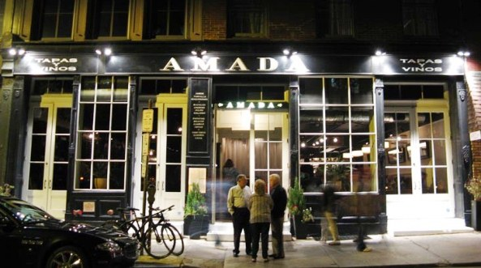
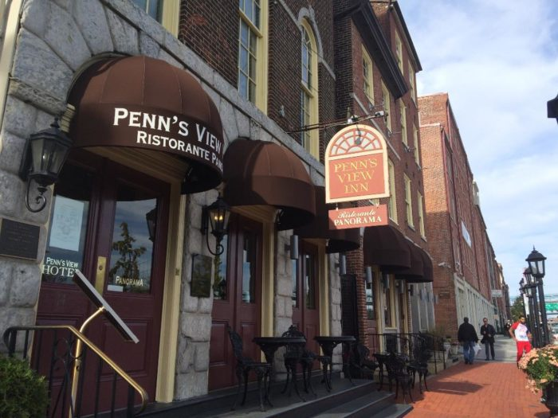

Make the most of your philadelphia vacation by checking out these top-rated restaurents and amazing shopping center with in the city.
Grab lunch to go the reading terminal market and enjoy it on the constitution center lawn.
Tsake a scroll on the cherry street pier and enjoy local arts and ice cream with a view of the historicity of the city of brotherly love.
After Your afternoon at the constitution center wander down to south street for some eclectic shopping and a taste of philly Federal Donut.
For an upscale philly experience we recommend visiting Amanda or Panorama for lunch or dinner.
 